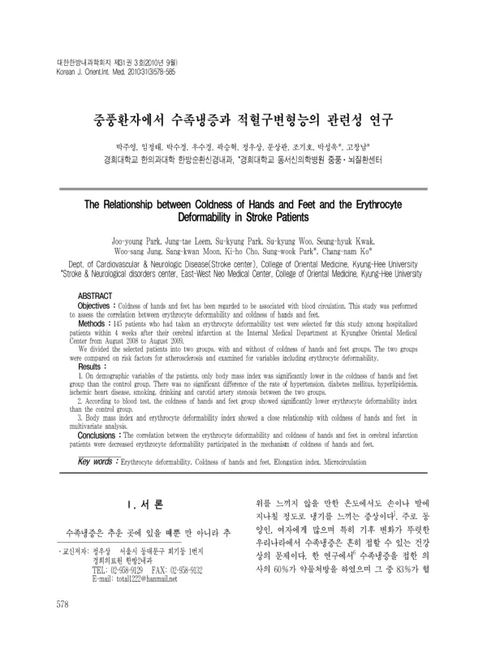

중풍환자에서 수족냉증과 적혈구변형능의 관련성 연구
Park Jy, Leem Jt, Park Sk, Woo Sk, Kwak Sh, Jung Ws, Moon Sk, Cho Kh, Park Sw, Ko Cn
The Journal of Internal Korean Medicine 31(3):578-585

첫 장 · 오픈액세스First page · open access
논문 소개Summary
수족냉증이 적혈구변형능과 관련이 있는지 본 연구입니다. 2008년 8월부터 2009년 8월까지 경희대학교 한방병원에 뇌경색 발병 4주 안에 입원해 적혈구변형능 검사를 받은 145명을 냉증이 있는 군과 없는 군으로 나누어, 동맥경화 위험인자와 견주었습니다. 인구학적 변수 가운데 체질량지수만 냉증군에서 유의하게 낮았고, 고혈압과 당뇨, 고지혈증, 허혈성심질환, 흡연, 음주, 경동맥 협착은 두 군 사이에 차이가 없었습니다. 혈액검사에서는 냉증군의 적혈구변형능 지수가 유의하게 낮았고, 다변량 분석에서도 체질량지수와 적혈구변형능 지수가 수족냉증과 밀접했습니다. 저자들은 적혈구변형능 저하가 수족냉증 기전에 관여한다고 보았습니다.
Whether coldness of the hands and feet is related to erythrocyte deformability. Among patients admitted to the Kyung Hee University Korean medicine hospital within four weeks of cerebral infarction between August 2008 and August 2009, 145 who had undergone an erythrocyte deformability test were divided into groups with and without coldness and compared alongside risk factors for atherosclerosis. Of the demographic variables only body mass index was significantly lower in the coldness group; hypertension, diabetes, hyperlipidaemia, ischaemic heart disease, smoking, drinking and carotid stenosis did not differ. On blood testing the coldness group showed a significantly lower erythrocyte deformability index, and on multivariate analysis body mass index and the deformability index both stayed closely related to coldness. The authors read reduced erythrocyte deformability as taking part in the mechanism of cold hands and feet.
인용Cite
Park Jy, Leem Jt, Park Sk, Woo Sk, Kwak Sh, Jung Ws, Moon Sk, Cho Kh, Park Sw, Ko Cn. 중풍환자에서 수족냉증과 적혈구변형능의 관련성 연구. The Journal of Internal Korean Medicine. 2010;31(3):578-585.